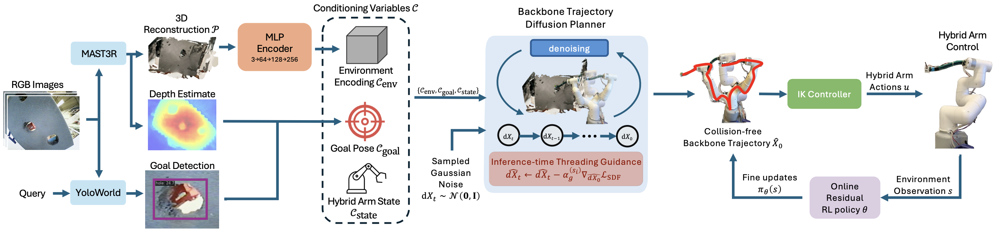

Manipulation through confined environments, such as threading a manipulator through narrow apertures, remains a fundamental challenge, especially for conventional rigid manipulators. Hybrid rigid-soft manipulators offer promise but face two compounding planning challenges: backbone shapes feasible in free space become infeasible under environmental contact, and planning rigid and soft segments independently ignores their kinematic coupling.
We present THREAD, the first diffusion-based trajectory planner for hybrid manipulation, learning a generative prior over physically realizable backbone trajectories conditioned on local environment geometry, with physics-inspired losses encoding curvature, smoothness, and collision constraints jointly across both segments.
1 Unified rigid-soft backbone representation. We encode the full kinematic chain as a backbone shape, enabling joint trajectory optimization over both rigid and soft subsystems without planning each segment independently.
2 Diffusion planner in backbone shape space. We introduce the first diffusion planner for hybrid manipulators, extending diffusion trajectory planning from rigid joint spaces to the continuous backbone shape domain and learning a generative prior over physically realizable trajectories.
3 Inference-time collision avoidance with online RL refinement. We incorporate inference-time gradient-based geometric guidance into the diffusion sampling process to enforce collision-free trajectories, complemented by a residual RL policy that issues fine corrective updates during execution.
4 Sample-efficient cross-embodied real-world transfer. We demonstrate that planning over backbone shapes enables direct transfer to a different rigid-soft embodiment in the real world, requiring only minimal online RL adaptation without retraining the diffusion planner.

The full kinematic chain — rigid arm joints and the soft segment's continuous curvature — is expressed as a single backbone shape. This shared representation couples both subsystems and enables joint trajectory optimization without segment-wise decomposition.
A denoising diffusion model is trained on simulation rollouts to learn a prior over physically realizable backbone trajectories conditioned on voxelized local geometry. Physics-inspired losses enforce curvature, smoothness, and collision constraints jointly. At inference time, gradient-based geometric guidance steers sampling toward collision-free paths.
A residual RL policy issues fine corrective commands during execution on the physical robot. Planning in backbone shape space allows the diffusion planner to transfer directly across embodiments; only the lightweight residual policy requires minimal online updates on the target hardware.
We evaluate THREAD in simulation across challenging confined-environment scenarios — including narrow aperture threading and cluttered passages — and validate real-world transfer on a physical hybrid rigid-soft manipulator. All baselines are trained under identical conditions; THREAD is trained once in simulation and transferred with minimal online RL adaptation.
Simulation
Real-World Transfer
@misc{kamtikar2026threadtrajectoryplanninghybrid,
title={THREAD: Trajectory Planning for Hybrid Rigid-Soft Manipulators with Environment-Aware Diffusion},
author={Shivani Kamtikar and Pranav Asthana and Naveen Kumar Uppalapati and Girish Krishnan and Girish Chowdhary},
year={2026},
eprint={2606.21792},
archivePrefix={arXiv},
primaryClass={cs.RO},
url={https://arxiv.org/abs/2606.21792},
}